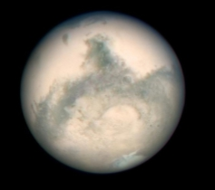

Строение Солнечной системы
Солнечная система – это часть Млечного пути, а он, в свою очередь, представляет собой спиралевидную галактику, вокруг центра которой вращается Солнце – самый крупный и тяжелый объект Солнечной системы, являющийся ее сердцем. Солнце, в своей системе, имеет восемь планет с их спутниками, множество астероидов, комет и невероятное количество метеорных тел. Планеты Солнечной системы разделяют на два типа:
- земная группа
- планеты-гиганты
Строение Солнечной системы оказывает значительное влияние не только на планеты, но и на их спутники, астероиды, кометы и бессчетное количество метеорных элементов, также входящих в ее состав.
Содержание:
Планеты земной группы
Сюда входит Меркурий, Венера, Земля и Марс. Их характерными особенностями являются небольшой размер и масса. Как правило, в их состав входят металлы и горные породы, благодаря чему они отличаются значительной плотностью. Планеты земной группы расположены к Солнцу ближе других космических тел.
Планеты-гиганты
Юпитер, Сатурн, Уран и Нептун. Для них характерен большой размер и маленькая плотность, обусловленная их преимущественно газовым составом. Несмотря на это, планеты-гиганты обладают сильной гравитацией и имеют немалое количество спутников, только у Юпитера их 63. Эти огромные космические тела располагаются на удаленном от Солнца расстоянии.
Астероидные кольца
Первое кольцо астероидов находится на границе двух групп небесных тел – в области Марса и Юпитера и считается главным, а второе – завершающий элемент Солнечной системы, оно находится за Плутоном, в недавнем прошлом девятой крупной планетой, оно носит имя пояс Койпера. Эти астероиды также именуют малыми планетами, в наше время изучено примерно 10 000 астероидов в главном кольце, предположительно их количество насчитывает 300 000.